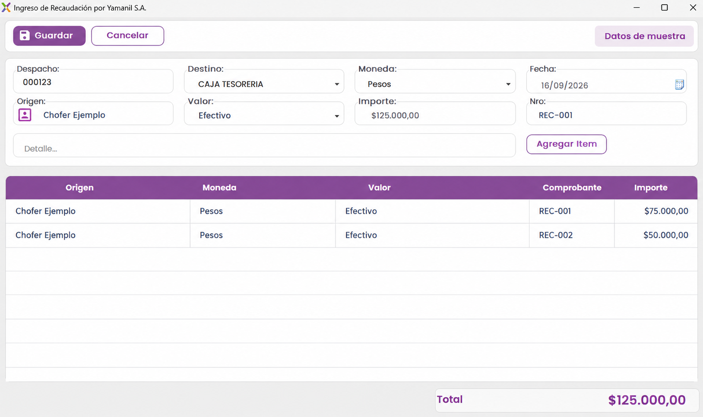

Ingreso de pedidos
Los pedidos individuales se concentran en Pedidos HH luego de su importación.
Seguimiento del transporte, documentación, retornos, recaudación y saldos en un mismo recorrido de trabajo.
Consultar transporteGLIX agrupa los transportes por número de despacho y reúne los pedidos individuales, las liquidaciones y las operaciones de facturación relacionadas.
El módulo también contempla ventas por mostrador, notas de crédito autorizadas y presupuestos para calcular ventas, descuentos y promociones entre fechas de los clientes.

La vista de despachos concentra los transportes pendientes de liquidación y los ya liquidados. Cada despacho abre el detalle de sus pedidos para trabajar sobre la operación completa.
Los pedidos individuales se concentran en Pedidos HH luego de su importación.
Los despachos pueden importarse automáticamente desde el servidor SFTP de Calipso.
El módulo incorpora un mapa de transportes para consultar la operación.
La documentación necesaria para el envío puede reunirse en un archivo PDF. También es posible generar varias impresiones programadas en una misma acción.
Antes de liquidarse, el despacho permanece pendiente y permite realizar las acciones operativas correspondientes.
El estado de entrega autoriza la salida. Reparto identifica al equipo afectado y la zona de entrega; Despachado registra la entrega en bodega a un tercero, revendedor u operador logístico.
Las diferencias entre el pedido y lo entregado se gestionan dentro del mismo flujo, con opciones para notas de crédito y retornos de mercadería.
La anulación múltiple genera una nota de crédito total y permite completar los motivos. Se pueden seleccionar varios pedidos.
Abre el pedido para quitar los artículos que corresponde anular. El módulo también permite anular una nota de crédito generada.
Se carga el código de producto, la cantidad y la unidad de medida. La opción Repetido admite el mismo producto en líneas distintas con diferentes unidades.
El sistema reduce las unidades de medida a la unidad más pequeña representada para registrar el retorno.
El cierre compara lo declarado con las notas de crédito, registra diferencias y actualiza las cuentas corrientes vinculadas a la liquidación.
La tabla compara la declaración con la nota de crédito. Una diferencia de cero indica que ambas coinciden; las diferencias señalan mercadería faltante o sobrante.
El saldo de liquidación se imputa en la cuenta corriente del chofer asignado. Los bultos liquidados quedan guardados en los legajos de los involucrados.
Las transferencias surgen de la importación de movimientos bancarios. Pueden imputarse incluso después de liquidar un envío y modifican la cuenta corriente.
El ingreso a tesorería contempla efectivo, retenciones, cheques y Prosegur. Se puede generar un traspaso hacia Prosegur.
La cuenta corriente muestra los saldos en efectivo de los choferes y, en paralelo, los saldos de cajones y envases.
Los saldos ajustados generan asientos en los legajos. La liquidación impacta directamente en la cuenta corriente del chofer.
Escribinos para conversar sobre tus procesos de despacho y liquidación.